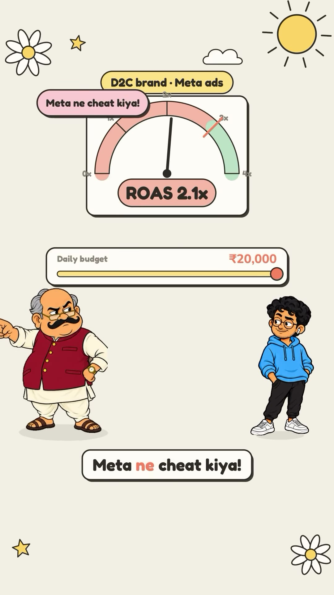
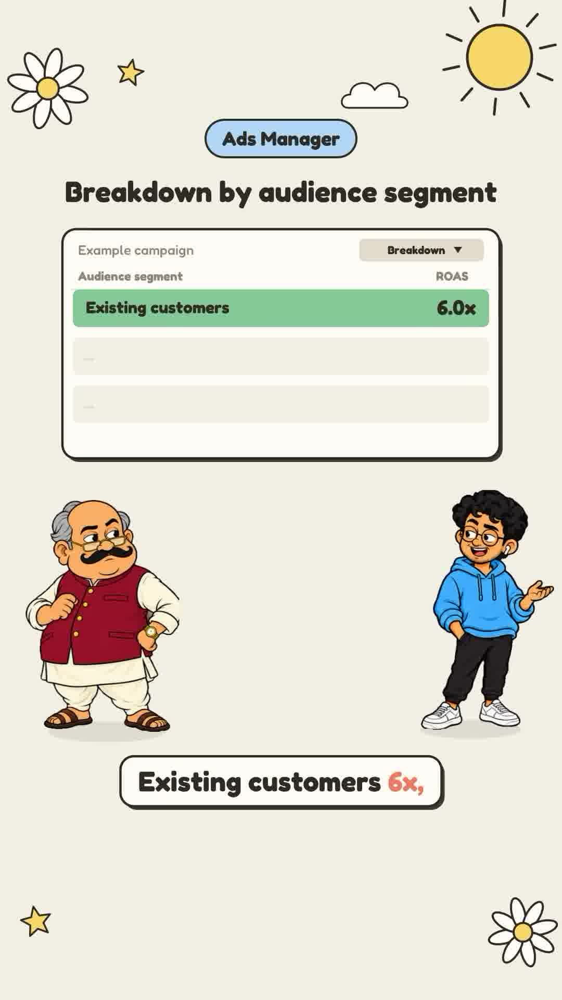
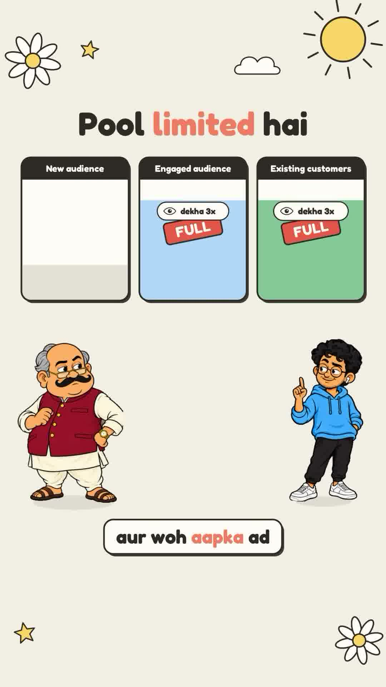
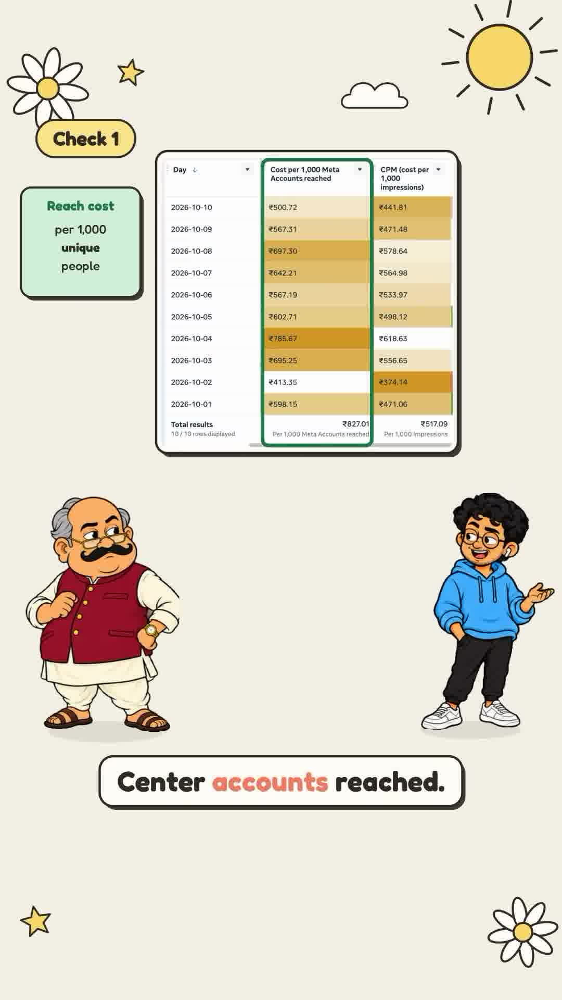

Executive Summary
A frequent frustration for performance marketers and e-commerce founders is the "Scaling Wall": a campaign shows a profitable 3.0X Return on Ad Spend (ROAS) at ₹10,000/day ($120/day). Encouraged by early returns, the media buyer doubles the daily budget to ₹20,000/day. Within 48 hours, blended ROAS collapses to 1.8X–2.0X, erasing profitability.
Media buyers often assume Meta's algorithm is penalized or broken. As marketing strategist Munna demonstrates, this failure is mathematical: Meta's bidding algorithm segments prospects into three distinct audiences with dramatically different conversion economics. Pumping budget into a winning campaign without isolating New Audience ROAS guarantees ad waste.
Core Visual Demonstrations




The Mathematical Mechanism: 3 Audience Pools
In Meta Ads Manager, selecting Breakdown → By Audience Segment reveals how Meta allocates capital:
| Audience Segment | Definition | Observed ROAS | Pool Capacity |
|---|---|---|---|
| Existing Customers | Users who previously purchased from the store. | 6.0X ROAS | Very small & finite |
| Engaged Audience | Interacted with ads, visited website, added to cart (past 180 days). | 4.0X ROAS | Limited pool |
| New / Cold Audience | First-time impressions with zero prior brand touchpoints. | 1.2X ROAS | Massive & infinite |
Why Low-Budget Campaigns Look Superhuman
At a low budget (e.g. ₹5,000/day), Meta's delivery system cherry-picks the lowest-hanging fruit: past buyers and warm engaged prospects. Because 70% of spend touches warm users, the blended account shows an impressive:
$$\text{Blended ROAS} = (0.7 \times 4.5) + (0.3 \times 1.2) = 3.51\text{X}$$Why Doubling Budget Crashes ROAS
The warm pool of existing customers and engaged visitors has a strict daily consumption ceiling. When you double budget from ₹10,000 to ₹20,000, Meta cannot buy more warm buyers because none exist.
Consequently, 100% of the incremental ₹10,000 budget is dumped straight into the cold, New Audience pool. Because cold audiences convert at 1.2X, the blended ROAS violently regresses toward the cold baseline:
$$\text{New Blended ROAS} = \frac{(₹5,000 \times 4.5) + (₹15,000 \times 1.2)}{₹20,000} = \frac{₹22,500 + ₹18,000}{₹20,000} = \mathbf{2.02\text{X}}$$The Production Scaling Protocol
- Never Scale on Blended ROAS Alone: Open Ads Manager and inspect ROAS specifically for the
New Audiencesegment. Only creatives that generate > 2.0X ROAS on cold audiences can survive budget scaling. - Track Cost Per 1,000 Accounts Reached (CPR): Unlike CPM (which counts raw ad impressions), CPR measures the cost to reach 1,000 unique human accounts. A surging CPR indicates audience fatigue and delivery saturation.
- Scale Horizontally via Creative Diversity: Rather than cranking vertical budget on a single ad set (which forces the auction into cold users with an ad format they dislike), launch distinct creative angles (founder video, unboxing, comparison chart, problem-hook UGC) into separate broad ad sets.